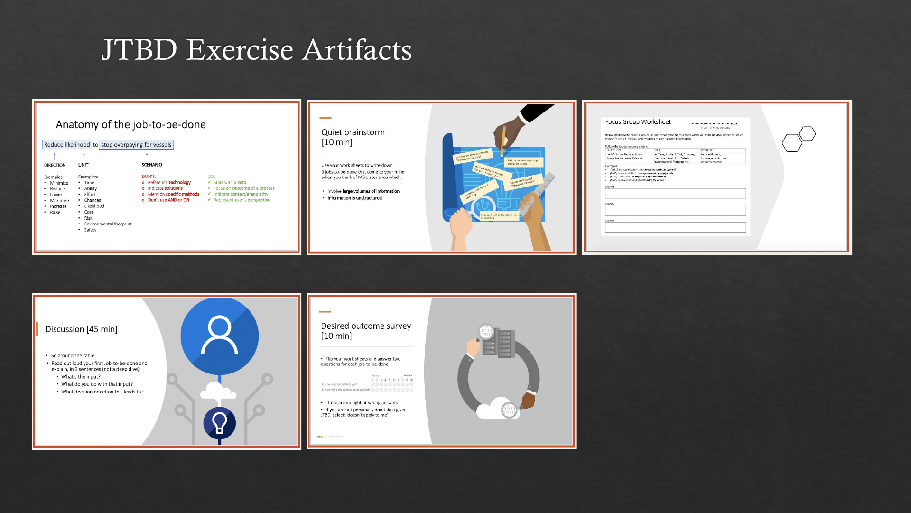

Research collaboration · Facilitation guide
Research workshops: From questions to shared decisions
Use a workshop to establish a shared problem, make assumptions inspectable, and agree on the evidence needed for the next decision.
- 1Prepare
Collect the decision, constraints, existing evidence, and participants.
- 2Frame
Agree on the user problem and distinguish facts from assumptions.
- 3Prioritize
Identify consequential uncertainties and research questions.
- 4Commit
Assign decision owners, research actions, and a review date.

Choose the workshop for the decision
| Format | When to use it | Required output |
|---|---|---|
| Research framing | A request is too broad or the decision is unclear. | A completed ART request, research questions, and named decision owner. |
| Evidence review | Teams disagree about what is known. | An evidence map with sources, uncertainties, and alternative explanations. |
| Needs and scenarios | Feature ideas have overtaken understanding of the work. | Relevant jobs, scenarios, and assumptions to investigate. |
| Measurement alignment | Teams use different definitions of success. | A scorecard with local measures, denominators, direction, and decision use. |
| Findings to action | Research is complete but the next action is unclear. | Decisions, retained strengths, prioritized changes, owners, and follow-up evaluation. |
Facilitate evidence rather than consensus alone
Give participants time to write independently before discussion. Ask them to distinguish observed evidence, interpretation, and proposal. Invite disagreement about assumptions without treating disagreement as a personal failure.
Record unresolved questions explicitly. Voting can identify priorities, but it cannot establish that an assumption is true or that a design will succeed.
Close with a decision record
Capture the decision, supporting evidence, remaining uncertainty, accountable owner, next action, and review date. Link the record to the research request and the relevant source material.